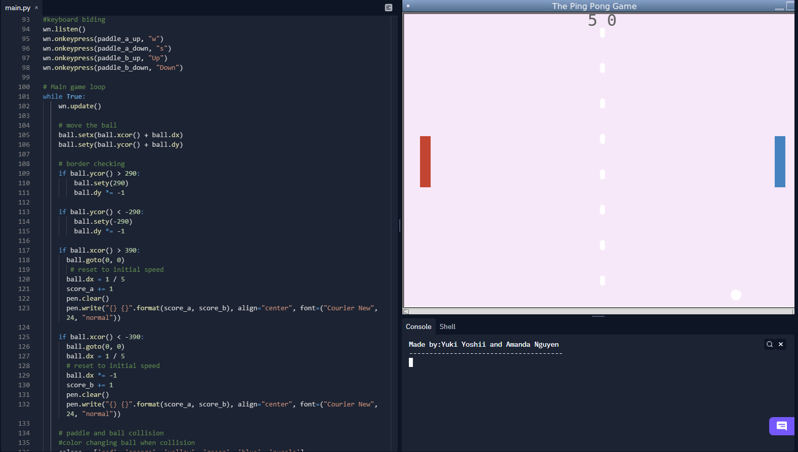
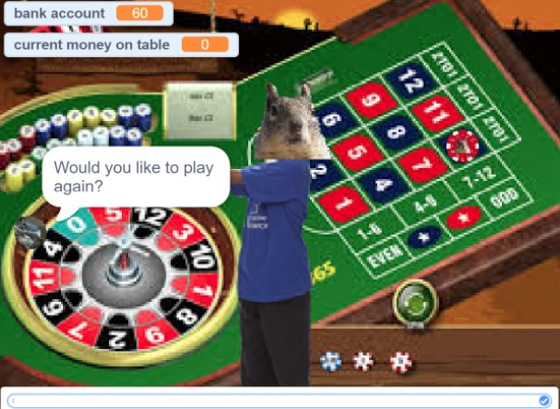
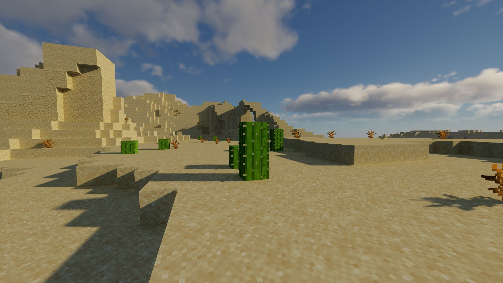
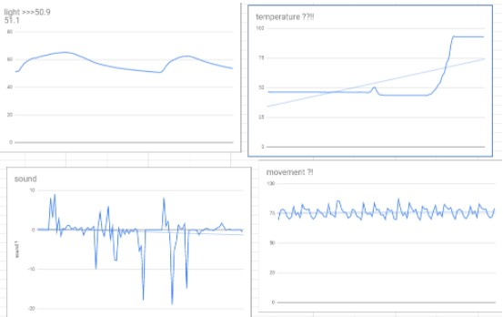
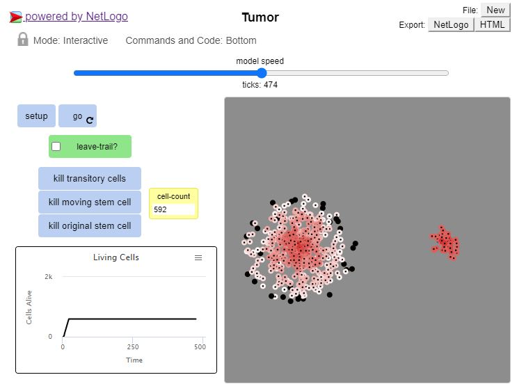

This is my Portfolio Page!

This is a minion game that I made with my partner. Essentially you get to choose the fate of the minion. When asked the question "Do you wish minion good luck" you get two choices. If you say yes minion lives another day and gets safely across the road. If you say no minion gets hit by a truck. As an extra bonus option you can input banana, if you do this minion gets distracted and never shows. Minion's fate is in your hands.

This is a ping pong game I made with my partner Yuki! The game itself is pretty simple and easy to explain. Essentially its a pvp game you can play with your friend and your goal is to score points on your partner while protecting your own goal!

This is our Squirrel Casino game that my partner Jack and I worked on. It is essentially a choose your own adventure game with a roulette aspect and a peculiar infatuation with squirrels.
 
For this project we had to determine where our rover was based off of data from different sensors. My partner Jacob and I decided that it was the Desert Plains. This is because our graphs match the descriptions of the biome as well does our sketched graphs.

This is a project my partner Isabella and I worked on. Here we worked with big data and turned them into grpahs for interpretation. Our data in specific concerned honey production in different states.
